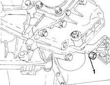
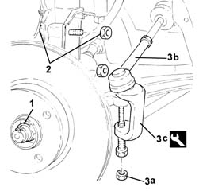
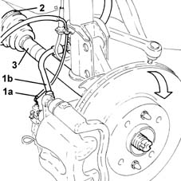
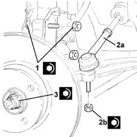
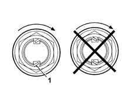
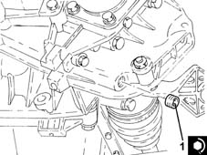

2710A40 l/h or r/h drive shaft (one) - r + r
- Path
- Procedures > 27 AXLE > 2710 FRONT AXLE > 2710A drive shafts and joints > 2710A40 l/h or r/h drive shaft (one) - r + r
- Kind
- repair procedure (removal / refitting; the operation number is the code)
- Applies to
- engines: 1.2 8v, 1.2 16v, 1.4 16v; all production periods
- Interactive page
- https://sloeber94.github.io/elrnDB-lYpsln/en/#/2429142
Applies to: engines: 1.2 8v, 1.2 16v, 1.4 16v; all production periods
 Removing
Removing
 Refitting
RefittingPosition the vehicle on the ramp.
FOR THE LEFT DRIVESHAFT
Proceed with the removal 4450B02 left front wheel r r
FOR THE RIGHT DRIVESHAFT
Proceed with removal 4450B04 right front wheel r r .
1. Undo the plug and drain the manual gearbox and differential.

Applies to: engines: 1.2 8v, 1.2 16v, 1.4 16v; all production periods
1. Remove the staking using a hammer and chisel, then undo the front wheel hub fixing nut and remove it.
2. Undo the bolts fixing the front hub steering knuckle to the front shock absorber.
3. Undo the nut (3a) and disconnect the steering link from the front steering knuckle using the tool (3b).
 | Name | Country |
|---|---|---|
3c | Extractor | 1.871.000.700 |

Applies to: engines: 1.2 8v, 1.2 16v, 1.4 16v; all production periods
1. Release the electrical wiring for the brake pad wear sensor (1a) and the brake caliper hose (1b) from the fastenings
Tilt the brake disc/front hub assembly downwards.
Withdraw the driveshaft from its attachment on the front wheel hub.
2. Open the clip securing the driveshaft to the differential internal driveshaft.
3. Remove the driveshaft complete with wheel side constant velocity joint and differential side three lobe joint.

Applies to: engines: 1.2 8v, 1.2 16v, 1.4 16v; all production periods
Refitting
RemovingPlace the driveshaft back in its housing and fit the three lobe joint on the differential internal driveshaft.
Tighten a new band fastening the driveshaft to the differential internal driveshaft.
Fit the constant velocity joint to the wheel hub.
Place the brake disc/front hub assembly back in its housing.
Secure the electrical wiring for the brake pad wear sensor and the brake caliper hose to the fastenings.
1. Tighten the front wheel hub fastening bolts to the front shock absorbers to the recommended torque.
 | Fastening | Component | Ø | Value (daNm) |
|---|---|---|---|---|
1 | Drain plug | GEAR CASING PADS | M16 | (Differential side) 1.6 ÷ 2.0 |
2. Connect the steering link (2a) to the front steering knuckle and tighten the nut (2b) to the recommended torque.
| Fastening | Component | Ø | Value (daNm) |
|---|---|---|---|---|
2b | Bolt | FRONT HUB STEERING KNUCKLE. | M10 | (Shock absorber side) 6.2 ÷ 6.8 |
3. Tighten a new nut fixing the wheel hub to the drive shaft to the recommended torque, using the angle tightening tool.
| Fastening | Component | Ø | Value (daNm) |
|---|---|---|---|---|
3 | Nut | ADJUSTABLE STEERING LINKS | M10 | (Steering knuckle side) 3.6 ÷ 4.4 |
| Name | Country |
|---|---|---|
- | Protractor | 1.860.942.000 |

Applies to: engines: 1.2 8v, 1.2 16v, 1.4 16v; all production periods
1. Stake the collar of the nut twice as shown in the figure.

Applies to: engines: 1.2 8v, 1.2 16v, 1.4 16v; all production periods
1. Tighten the manual gearbox and differential fluid drain plug to the recommended torque.
| Fastening | Component | Ø | Value (daNm) |
|---|---|---|---|---|
1 | - | - | - | - |

Applies to: engines: 1.2 8v, 1.2 16v, 1.4 16v; all production periods
FOR THE LEFT DRIVESHAFT
Proceed with the refitting 4450B02 left front wheel r r
FOR THE RIGHT DRIVESHAFT
Proceed with refitting 4450B04 right front wheel r r .
Refill the manual gearbox and differential 0010T41 MANUAL GEARBOX OIL - Check level and top up, if necessary .
Remove the car from the ramps.